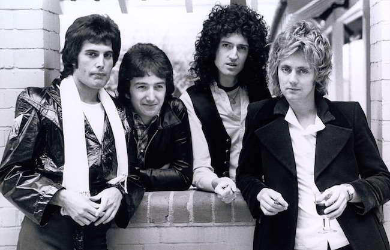

Queen é uma das bandas de rock mais icônicas da história da música. Formada em 1970 em Londres, a banda alcançou grande sucesso mundial com seus álbuns inovadores e performances épicas. O grupo é composto por Freddie Mercury (vocal), Brian May (guitarra), Roger Taylor (bateria) e John Deacon (baixo).
Freddie Mercury foi o carismático vocalista da banda, conhecido por sua voz poderosa e presença de palco única. Sua morte precoce em 1991 não diminuiu o legado da banda.
Brian May é o guitarrista e compositor da banda. Ele é conhecido pelo seu estilo único de tocar guitarra e pela criação de riffs memoráveis.
Roger Taylor é o baterista da banda e também contribui com vocais em várias músicas. Sua habilidade técnica e energia no palco são notáveis.
John Deacon foi o baixista da banda, responsável por compor grandes hits como "Another One Bites the Dust".